NECESSÁRIO AUXÍLIO ÀS MISSÕES
OBRA DE PROPAGAÇÃO DA FÉ
Vinte anos depois, o Papa Leão
XIII estendeu a “Obra de
Propagação da Fé” a todo o mundo. E como
confirmação do espírito Missionário da Obra e do seu precioso 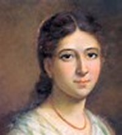
Em cada Paróquia, em todos os países no mundo, no terceiro Domingo do mês de Outubro se celebra o “Dia das Missões”, uma data especial para os cristãos oferecerem orações, sacrifícios e doações financeiras para ajudar as Missões e os Missionários em todas as partes do mundo.
A Obra propõe formar "um fundo central de solidariedade para todas as missões". Suscitar, promover, apoiar e formar vocações missionárias. Manter o intercâmbio de informações e testemunhos para estabelecer laços fraternos entre os cristãos, despertando a solidariedade e a comunhão tanto no ato de dar, como no de receber.
Ao mesmo tempo, a Organização também estabeleceu o objetivo de suscitar o compromisso pela evangelização universal em todos os setores do povo: sejam nas famílias, nos movimentos, associações, seminários, comunidades eclesiais de base, Paróquias, Dioceses, a fim de que todos os cristãos tomem consciência da sua vocação missionária universal. Promover nas Igrejas locais, a cooperação tanto espiritual como material, assim como realizar e estimular o intercâmbio de evangelizadores para todo o mundo. Sendo a evangelização a primeira Obra do ESPÍRITO SANTO, é necessário incluir nela a “oração e o sacrifício”.

FOTOGRAFIAS
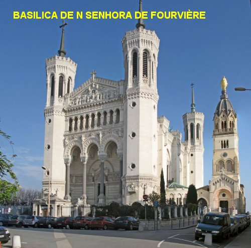
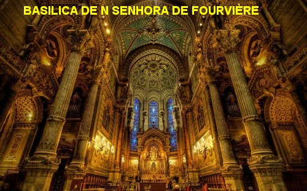
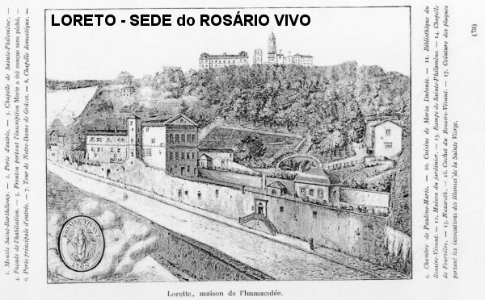
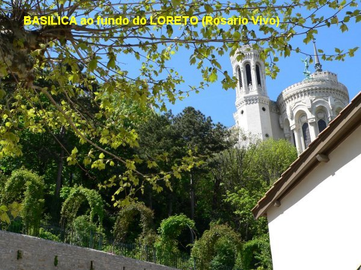
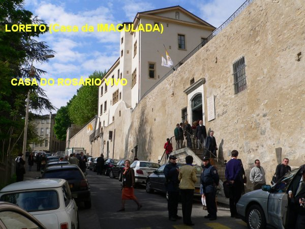
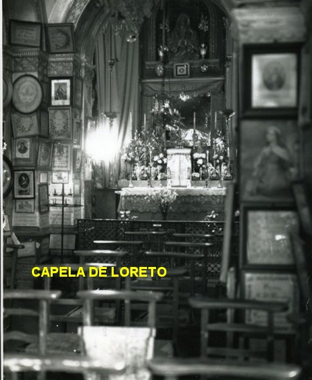
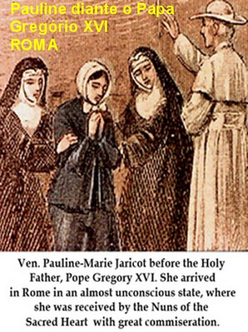
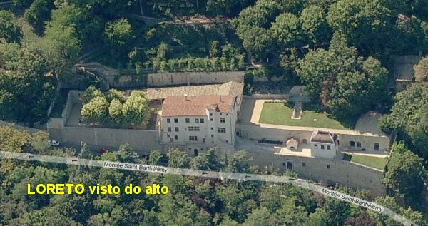
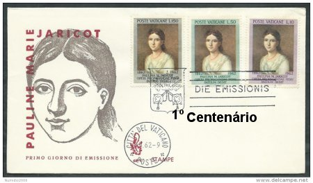
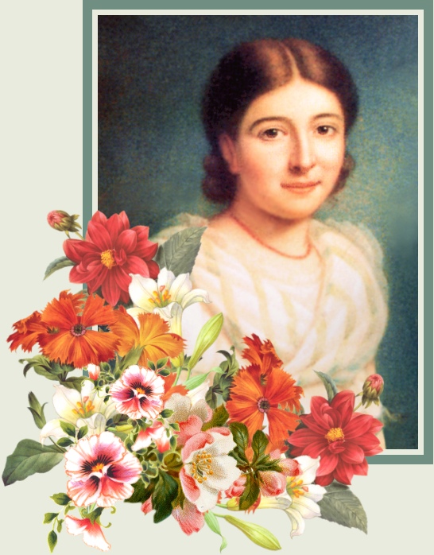
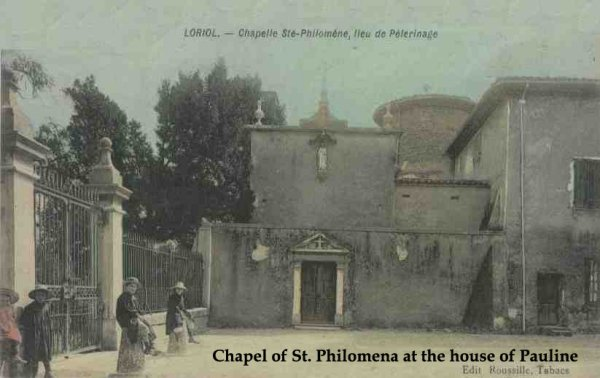
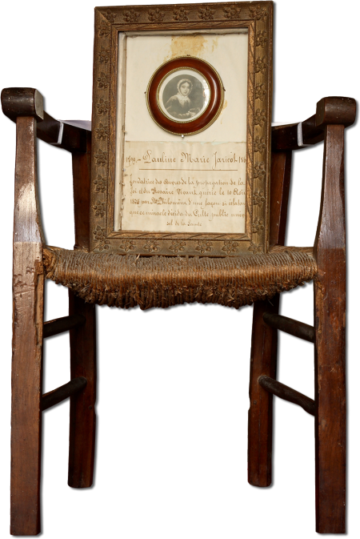
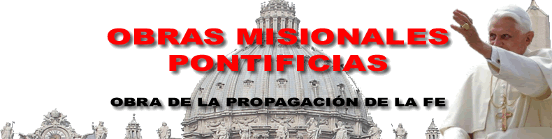
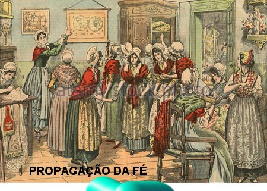

CONVITE
Este Site foi construído pelo Apostolado dos Sagrados Corações. Clique aqui ou no endereço abaixo para visitar o nosso PORTAL. Nele encontrará uma apreciável quantidade de Sites sobre o CRIADOR, o ESPÍRITO SANTO, JESUS DE NAZARÉ, sobre NOSSA SENHORA, os ANJOS DO SENHOR e Sites que apresentam a Vida e Obra de diversos SANTOS. Todos eles elaborados com muita dedicação, sobretudo, fundamentados na Sagrada Escritura, na Tradição Cristã, na Vida e Obra dos Santos e nas Manifestações Sobrenaturais, com a intenção de informar somente a Verdade.
http://www.apostoladosagradoscoracoes.com/

PARA SE COMUNICAR CONOSCO, CLIQUE NA FIGURA ABAIXO E NOS ENVIE O SEU E-MAIL:


FIRMAS QUE DIVULGAM O SITE